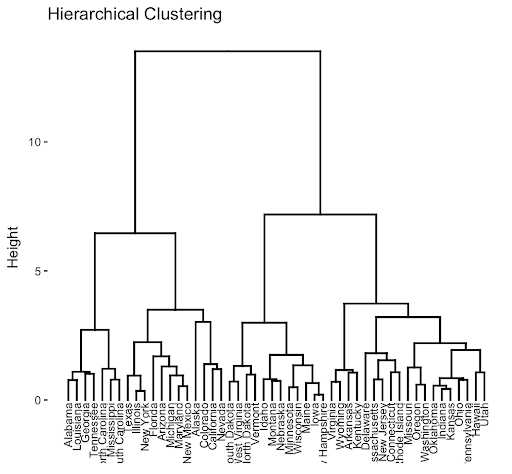
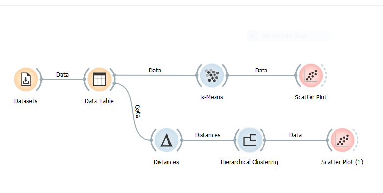

Кластеровање
Кластеровање је врста ненадгледаног учења. Подсетимо, метода ненадгледаног учења је метода у којој се скупови података састоје од улазних података без означених лабела (припадајуће класе у случају класификације или нумеричке вредности у случају регресије). Обично се користи као процес проналажења смислене структуре, груписа инстанци у групе према међусобним сличностима и слично.
Кластеровање врши поделу података у више група тако да су инстанце података из једне групе сличне другим инстанцама података у истој групи а различите од података у другим групама. То је у основи груписање неозначених података на основу сличности и различитости међу њима. За један скуп података може постојати више начина за груписање односно кластеровање података, зависно од тога који критеријум се користи за одређивање сличности, односно начина мерења растојања између инстанци-
Ови алгоритми ненадгледаног учења имају широк спектар примена и прилично су корисни за решавање проблема у стварном свету као што су откривање аномалија, груписање докумената или проналажење купаца са заједничким интересима на основу њихових претходних куповина.
Неки од најчешћих метода кластеровања су:
- Алгоритам К-средина (К means clustering)
- Хијерархијско кластеровање (Hierarchical clustering)
Илустрација процеса кластеровања са три, јасно одвојена кластера дата је на слици.
Алгоритам К-средина (K-means Algorithm) представља јако интуитиван метод кластеровања који је изузетно једноставни за имплементацију a при томе и врло ефикасан. То су главни разлози који објашњавају одакле овом алгоритму ттолико популарности. У питању је итеративни метод који покушава поделити скуп података на к различитих подгрупа (кластера), где свака тачка података припада само једној групи. Циљ је поделити податке у групе односно кластере тако да подаци унутар кластера (група) буду што сличнији, при чемз су саме тачке из разних кластера што удаљеније могуће. Метод обично почиње случајним распоређивањем тачака у кластере, а касније се у сваком кораку свака тачка додељује најближој центроиди, где су центроиде тачке које интуитивно представљају центре кластера и дефинисане су као просеци свих припадајућих тачака односно инстанци тог кластера. Најчешће се метод среће у скуповима података које могу бити представљене као тачке у реалном n-димензионом простору, где се као метрика растојања обично користи еуклидско растојање. Код ове методе, избор броја кластера (број к) често може представљати проблем. Постоје неке хеуристике избора параметра к, међутим о њима неће бити речи на овом месту.
Хијерархијскo кластерoвање (Hierarchical Clustering) групише податке у стабло кластера. Главна предност хијерархијског кластеровања је та што није потребно прецизирати број кластера, већ ће их метод наћи сам. Поред тога, омогућава цртање дендограма. Дендограми су визуализације бинарног хијерархијског груписања.
Хијерархијско кластеровање започиње тако што се свака тачка из скупа података третира као засебан кластер. Затим, се идентификују два најсличнија кластера која које спаја у један кластер. Ови кораци се настављају док се сви кластери не споје. Циљ је створити хијерархијски низ угњеждених кластера. Након креираног дендограма доста нам је лакше определити се за број кластера у које желимо поделити податке (на основу визуелизованих растојања између њих).

Погледајмо сада како ово функционише у пракси. Посматрајмо скуп података Iris. Желимо да, користећи споменута два алгоритма, поделимо овај скуп података у групе – кластере.
Прво је потребно учитати скуп података, а ради прегледности ћемо га приказати табеларно.
Најпре ћемо одабрати оператор k-Means из менија који се налази на левој страни прозора, под називом Unsupervised. Коначно, овај модел ћемо визуелизовати користећи оператор Scatter Plot.
На сличан начин одабраћемо и оператор Hiererchical Clustering који се такође налази у менију под називом Unsupervised. Пре него одаберемо овај оператор, прво је потребно укључити и оператор Distances који се користи за мерење растојања или дужина, зависно од проблема. И овај модел ћемо визуелизовати помоћу оператора Scatter Plot.

Кликом на оператор Hiererchical Clustering приказује се прозор на коме се налази већ споменути дендограм, односно дијаграм на ком су графички представљени кластери односно групе овог скупа података. На y оси дендограма налазе се инстанце скупа података (конкретно цветови) док се припадност кластерима тих инстанци јасно очитава са x осе. Илустрација овога дата је на слици испод.
Хајде да упоредимо графике добијене коришћењем ова два модела кластеровања. С обзиром на димензионалност коришћеног скупа података ограничићемо се за приказ података у две димензије избором два конкретна атрибута. Конкретно, у овом примеру изабраћемо атрибуте petal length и petal width односно дужину и ширину латица. У том координатном систему, визуализација кластера у случају алгоритма К средина, односно визуелизација придружених кластера у случају Хијерархијског кластеровања дате су на сликама испод, тим редом. Напомињемо да смо број кластера поставили на 3, с обзиром да знамо да радимо са скупом података који садржи податке о три различите групе цветова.
Приметимо да је су у овом случају оба алгоритма кластеровања дала скоро па потпуно исти график. То не мора увек бити случај, поготово са комплексинијм структурама података.
Такође, напоменимо да у горњем левом углу овог прозора постоји опција да се одабере који атрибут ће бити приказан на којој оси. Варирањем понуђених атрибута можемо закључити у односу на које карактеристике се подаци из скупа за тестирање могу најбоље поделити. Приказ додељених кластера алгоритма К средина када податке прикажемо у координатном систему дужине и ширине чашичних листића дат је на слици испод.